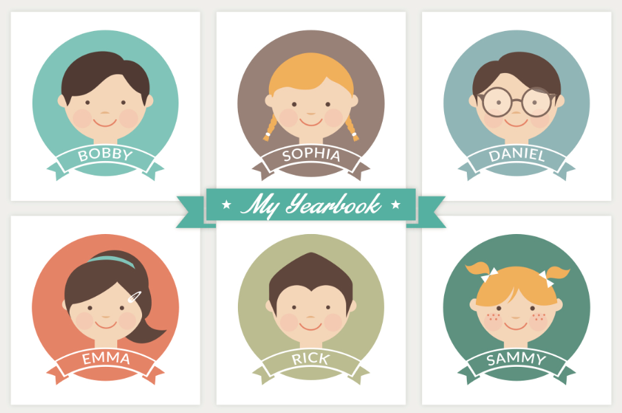

click on my face!
hello! my name is Christopher Ackerman
I am a business student studying entrepreneurship with a minor in computer science. This website's purpose is to give you a better idea of who I am!
↟
↡
work experience
Data Analyst Intern
Advanced Continuing Education Association
Boston, Massachusetts | January 2017 - Present
My responsibilities at ACEA will be primarily to design a centralized system that consolidates data
from their proprietary database and Google Analytics that improves accessibility for each area
of the business. This system will be used to determine the health of the business, recognize
key areas of improvement, and analyze critical strategic decisions. I will need to develop methods to ensure data
accuracy and scalability as the company grows, so it will be a vital component to the company’s continued success.

(scroll horizontally)
Finance and Operations Intern
Foundation for Sustainable Development
San Francisco, California | May 2016 - September 2016
I worked to simplify a financial systems program for directors at eight international sites, saving money
and valueable time. I Designed and created a monthly funds request form via a
VBA macro-enabled Excel file, ensuring financial accuracy in our annual budget.
This new system reduced the possibility of error and the amount of time required to complete the
request, allowing the site directors more time to manage their interns and site operations.

Barista
Starbucks Coffee
Boston, Massachusetts | December 2015 - May 2016
As a barista, I was responsible for opening and closing the location, taking orders and processing
payments, as well as making the drinks or food for the customers. Working in such a fast-paced
environment gave me the skills to efficiently manage multiple tasks, as well as communicating effectively
with my coworkers and customers.
↟
↡
education
Questrom School of Business | Bachelor of Science in Business Administration
At Questrom, community and teamwork are at the heart of what we do. With students from 80+ countries and 93% of students placed in an MBA program 3 months after graduation, Questrom is a
vibrant and challenging environment. With thirteen concentrations to choose from,
my choice to study entrepreneurship is a reflection of my desire to create something and make a difference for society.

College of Arts and Sciences | Minor in Computer Science
My interest in computer science comes from constant questioning and a need to know how things work down to their smallest pieces. Through computer science, I am learning how this
new technology-era world runs and am challenged with every class. Boston University's
computer science program has a wide breadth from networks and data mining to
artificial intelligence and security. With that variety, computer science majors and
minors enter the workforce with a large platform to build on.

↟
↡
leadership
Facilities Leader
Haiti, Mexico, Arizona | November 2011 - March 2014
The volunteer trips I was a part of involved caring for children, construction projects,
and community outreach. As facilities leader, I was in charge of food and
transportation details for 50+ adults and teenagers. In my two years as facilities leader,
I acquired valuable experience in project management and logistical planning.

(scroll horizontally)
Business Manager
Berean High School | August 2014 - May 2015
As business manager of the yearbook team, keeping track of yearbook orders, order fulfillment, and tracking
yearbook funds to date were some of my responsibilities. I had to ensure that all 600 orders were
fulfilled properly and on time. This experience was very valuable because I began to learn to value of working
as a team. I also worked with the media team, gaining cross-functional skills.

↟
↡
interests
The Great Outdoors
Mountain biking, Hiking, Running
Having grown up in Northern California, I've always loved exploring the state parks, nature reserves, and
national seashores. With too many parks to count, finding a new trail is one of my favorite things to do
whenever I visit California. Being out in nature is so calming to me, like an escape from the
hustle and bustle of college life.

(scroll horizontally)
Globe Trotting
Istanbul, Prague, Madrid, Dubrovnik, Paris, Oslo, Lima, Mexico City, Antigua
Traveling to new places and experiencing new cultures is something that I adore, and have been lucky enough
to travel to many of my dream destinations all over the world! Istanbul and Paris have been two of my favorite
destinations so far but I hope to go to Mumbai and Singapore very soon.
↟
↡